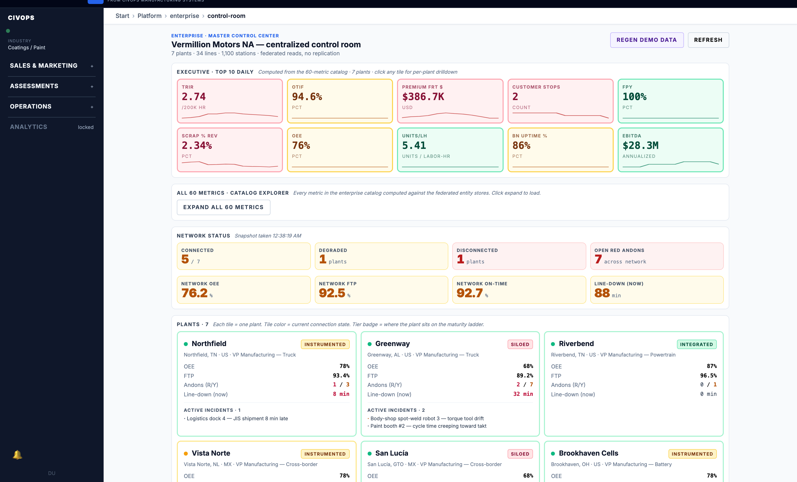

Prepared for
Nissan Smyrna senior management & maintenance leadership
Nissan Smyrna senior management & maintenance leadership
The sample UI should look like something a Nissan maintenance technician would actually use on the floor. That means presenting it as a rugged tablet experience with role-specific logic, root-cause support, and one shared event record.
One event record for operator, maintenance, Control Room, and reliability
Show the simplest useful action first. If the issue is minor, let the operator self-serve. If not, turn one tap into a clean handoff.
This is the primary working view: live alarms, similar failures, parts, manuals, PM history, and closure tools in one place.
The Control Room sees the same event record but with fleet-level context, escalations, and cross-area coordination.
Reliability needs the trend and pattern view: bad actors, repeat failures, and root-cause patterns, not just the active incident.
Separate from the CCR, on the same data infrastructure (HighByte UNS · Cimplicity · Inspect/Autis · the FAULT app · MES). Floor-facing displays at the WIP entry to punch and at final inspect. Representative data for layout review.
| Seq | Model | Color |
|---|---|---|
| 1042 | Rogue | Gun Metallic |
| 1043 | Pathfinder | Pearl White |
| 1044 | Rogue | Boulder Gray |
| 1045 | Murano | Super Black |
| 1046 | Rogue | Pearl White |
| 1047 | Pathfinder | Scarlet Ember |
| 1048 | Rogue | Gun Metallic |
| 1049 | Murano | Boulder Gray |
| 1050 | Rogue | Super Black |
| 1051 | Pathfinder | Pearl White |
| Model | Front | Rear | Total |
|---|---|---|---|
| Rogue | 5 | 4 | 9 |
| Pathfinder | 4 | 3 | 7 |
| Murano | 4 | 2 | 6 |
| QX60 | 3 | 2 | 5 |
| Total | 16 | 11 | 27 |
The tablet above is the technician's view of one event. The central control room is the other end of the same operating loop — the centralized control room this engagement is chartered to establish: executive KPIs, network status, and per-plant health across the fleet, all built from the same event records.
